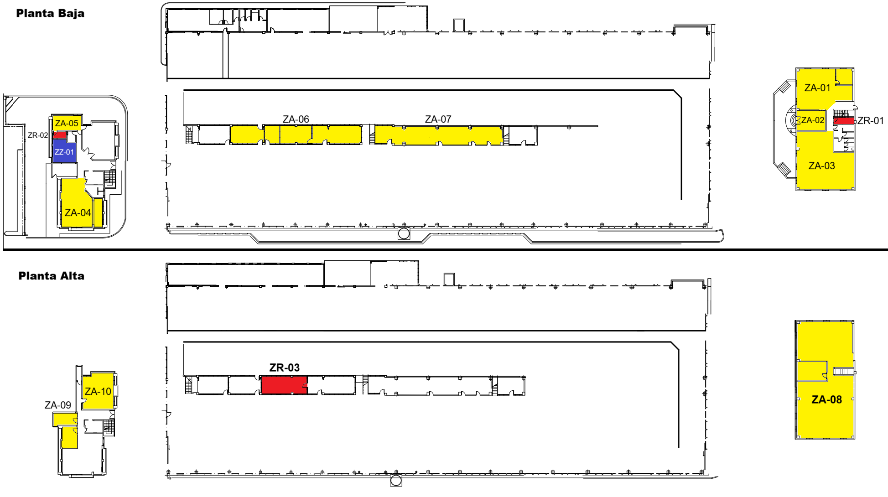
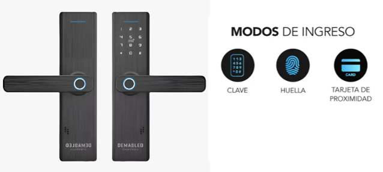
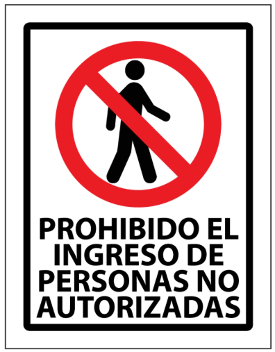
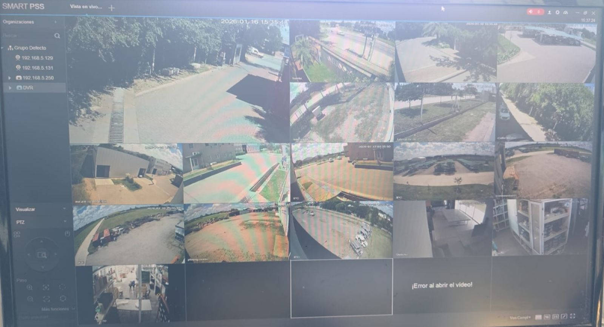
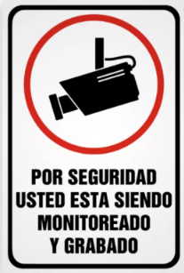

Procedimiento de Gestión de Zonas de Seguridad
Código: P311-IT-1
Última revisión: 16/11/2026
Rev. N°: 2
Cumple: TISAX (VDA ISA 3.1.1), ISO 27001:2022 (A.7.1 – A.7.4)
1 OBJETIVO
Describir cómo se definen, protegen y verifican las zonas de seguridad y cómo se dan y quitan los accesos a las zonas rojas, según MC311-IT-1 y el control 3.1.1 de TISAX.
2 ZONAS Y MEDIDAS
| Nivel | Zonas (F311-IT-6) | Medidas de protección | Quién accede |
|---|---|---|---|
| Roja – restringida | ZR-01 Data Center 1 y ZR-02 Data Center 2 (servidores, racks y switches); ZR-03 Archivo de documentación confidencial |
|
Solo personas de la lista autorizada; terceros acompañados |
| Amarilla – interna | ZA-01 a ZA-10: oficinas de Compras, Ingeniería y Proyectos, Gerencias, Administración, RRHH, Comercial |
|
Personal del área; visitantes solo acompañados |
| Verde – general | ZV-01 Planta de fabricación y matricería; ZV-02 Recepción y despacho; ZV-03 Pañol y depósito; ZV-04 Guardia y portón |
|
Todo el personal; visitantes registrados |
| Externa | EXT-01 EnterFile (custodia de documentación física); EXT-02 Instalaciones de clientes durante buy-off (notebooks) |
|
Según contrato / personal autorizado |

Plano de zonas de seguridad (F311-IT-6, hoja "Plano")
3 MEDIDAS IMPLEMENTADAS
3.1. Zonas rojas
- Cerraduras con biométrico, tarjeta y pin en los data centers y en el archivo.
- Cámaras monitoreadas las 24 horas por la guardia.
- Cartelería de prohibición de ingreso sin autorización.


Cerradura biométrica y cartelería de zona roja
3.2. Monitoreo
- La guardia monitorea las cámaras de la planta y de los accesos las 24 horas y avisa a IT y a RRHH los eventos (P161-IT-1).


Monitoreo de cámaras por la guardia
3.3. Red
- Racks y switches dentro de los data centers; Wi-Fi de invitados separada de la red interna.
4 ALTAS, BAJAS Y REVISIÓN DE ACCESOS A ZONAS ROJAS
| Etapa | Responsable | Registro |
|---|---|---|
| 1. Pedido de acceso con motivo | Responsable de área → IT Manager | Correo |
| 2. Aprobación | IT Manager | Lista de autorizados (F311-IT-6) |
| 3. Alta de huella, tarjeta, pin o llave | Administrador de IT | Lista de autorizados (fecha de alta) |
| 4. Baja por desvinculación o cambio de puesto | RRHH avisa → Administrador de IT borra la huella, retira tarjeta y llave, cambia el pin | Lista de autorizados (fecha de baja) |
| 5. Revisión de la lista | IT Manager | Cada 6 meses (F151-IT-5, V-25) |
| 6. Ingreso de terceros o personas fuera de la lista | Persona autorizada que acompaña | F311-IT-7 |
5 REGLAS DE CONDUCTA
- Se aplican las reglas por zona de MC311-IT-1 §7.
- Se comunican con la cartelería, el curso e-learning (módulos 5 y 6), el F212-IT-1 y, para visitantes, el F311-IT-2.
6 VERIFICACIÓN
- Una vez al año, el IT Manager recorre las zonas con el F311-IT-6: estado de cerraduras, cámaras y cartelería, y coincidencia de las huellas y tarjetas registradas con la lista de autorizados. Registra la fecha en la columna "Última verificación".
- Los desvíos se registran en el F151-IT-4.
7 REGISTROS
- F311-IT-6 (zonas, plano y lista de autorizados) · F311-IT-7 (accesos de terceros).
8 REVISIONES DEL DOCUMENTO
| Rev. N° | Fecha | Descripción |
|---|---|---|
| 0 | 25/8/2025 | Primera emisión del documento |
| 1 | 16/1/2026 | Revisión completa del documento |
| 2 | 16/11/2026 | Zonas roja, amarilla, verde y externa con medidas reales; altas, bajas y revisión semestral de accesos a zonas rojas; F311-IT-7 solo para terceros y personas fuera de la lista; verificación anual; se quitan ejemplos, recomendaciones y el diagrama de flujo. Aprueba la Gerencia de RRHH. |